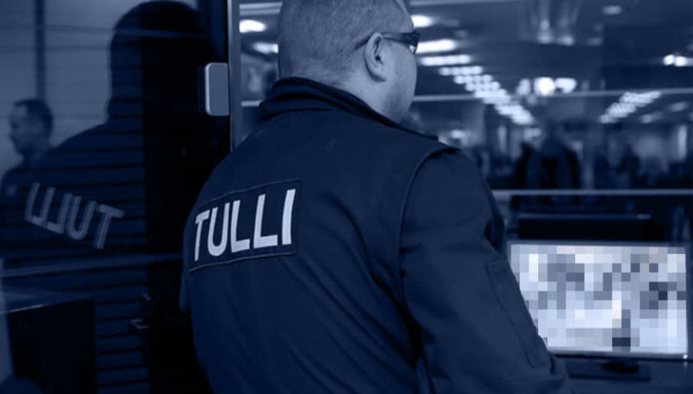
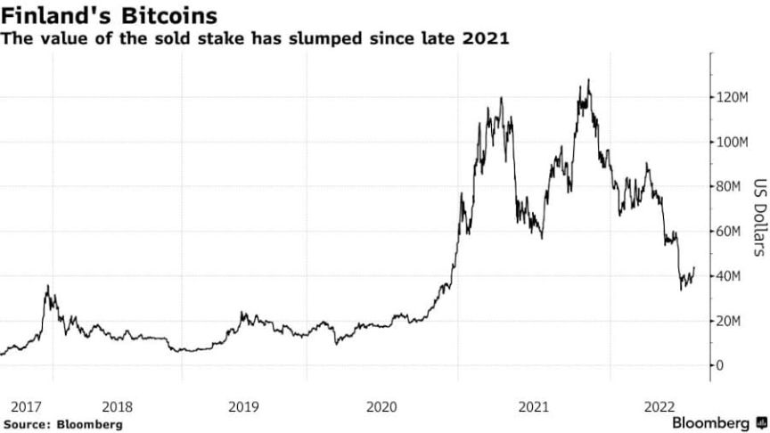
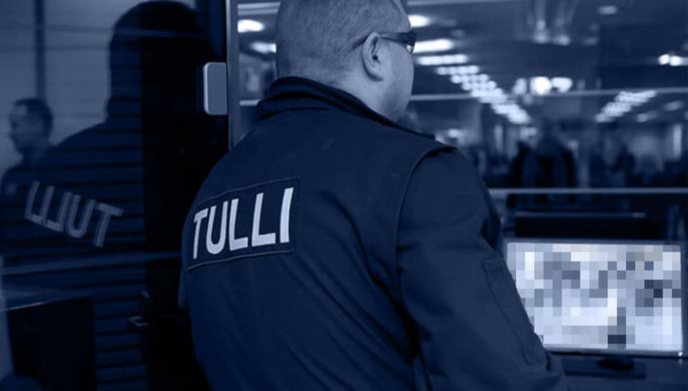
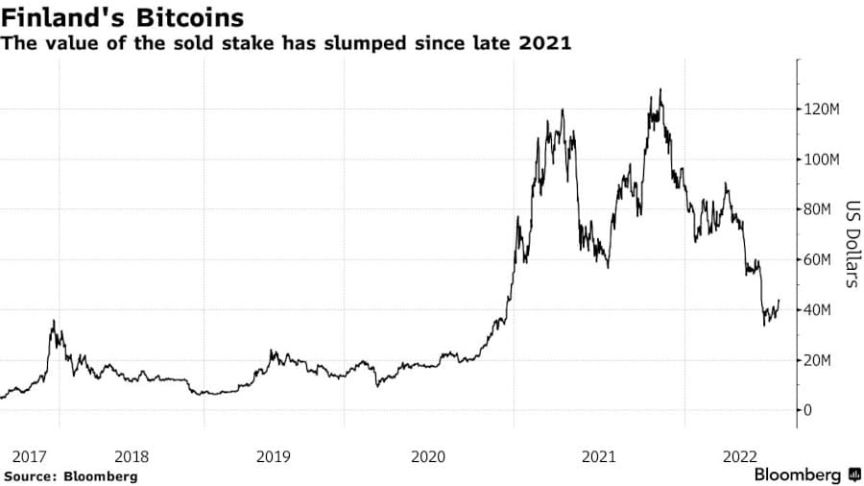

Finnish Customs Sold Almost 1,900 BTC for $47.5 Million
~1 min read | Published on 2022-07-21, tagged Cryptocurrency using 152 words.
Finnish Customs announced the sale of 1,889 Bitcoins seized during investigations into drug crimes.
According to a press release, Customs in Finland sold 1,889.1 Bitcoins via two cryptocurrency brokers for 46.5 million euros ($47.5 million). Customs obtained most of the Bitcoin during investigations into drug crimes before 2018.

In 2021, Customs selected two brokers to conduct the sale after a competitive negotiation. Per Bloomberg, the seized Bitcoins were worth $130 million in 2021, “but Finland made no attempt to time the market with its sale.”

Customs is waiting for a judgment of forfeiture on another 90 Bitcoins. Additionally, the agency has seized “other cryptocurrencies, but since the preliminary investigation into these cases is ongoing, the currencies or their amounts cannot be revealed in detail.”
Finnish Customs sold its legally forfeited cryptocurrencies | archive.is, archive.org, tulli.fi
According to a press release, Customs in Finland sold 1,889.1 Bitcoins via two cryptocurrency brokers for 46.5 million euros ($47.5 million). Customs obtained most of the Bitcoin during investigations into drug crimes before 2018.

The bitcoins were sold by two cryptocurrency brokers selected by Customs.
In 2021, Customs selected two brokers to conduct the sale after a competitive negotiation. Per Bloomberg, the seized Bitcoins were worth $130 million in 2021, “but Finland made no attempt to time the market with its sale.”

The value of the seized BTC has dropped since 2021 | Bloomberg
Customs is waiting for a judgment of forfeiture on another 90 Bitcoins. Additionally, the agency has seized “other cryptocurrencies, but since the preliminary investigation into these cases is ongoing, the currencies or their amounts cannot be revealed in detail.”
Finnish Customs sold its legally forfeited cryptocurrencies | archive.is, archive.org, tulli.fi